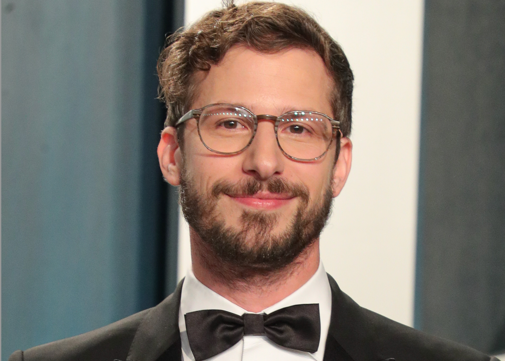
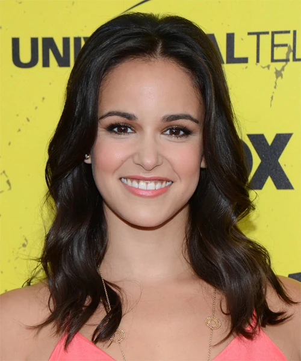
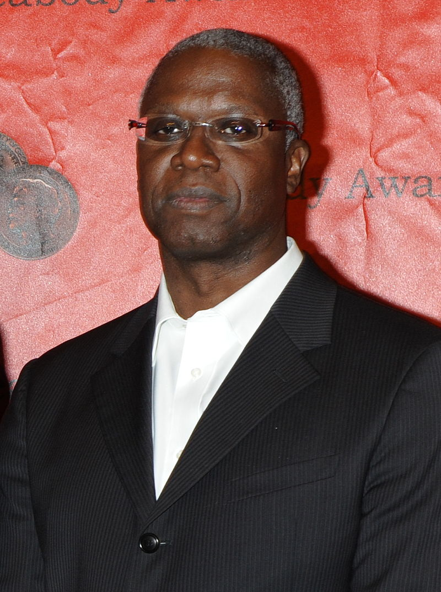
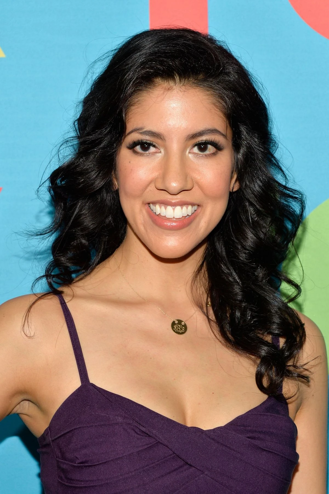
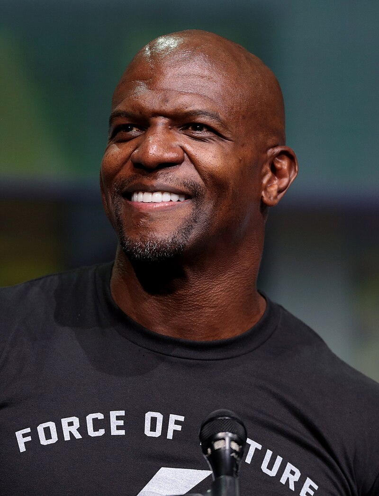
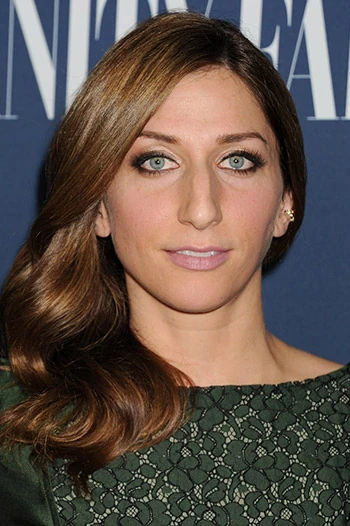

Andy Samberg interpreta a Jake Peralta, el carismático y algo inmaduro detective de la comisaría 99. Con su estilo único de resolver crímenes, Jake aporta una gran dosis de humor y energía a la serie.
Melissa Fumero interpreta a Amy Santiago, una detective organizada y ambiciosa que constantemente busca impresionar a sus superiores. Su relación con Jake es uno de los puntos centrales de la serie.
Andre Braugher interpreta al Capitán Raymond Holt, el serio y estoico líder de la comisaría. A pesar de su falta de expresión emocional, el personaje se convierte en uno de los más queridos por su disciplina y sus momentos cómicos inesperados.
Stephanie Beatriz interpreta a Rosa Diaz, una oficial dura y misteriosa que siempre mantiene una actitud seria. Con el tiempo, Rosa revela una faceta más suave y vulnerable que enriquece su personaje.
Terry Crews interpreta a Terry Jeffords, el sargento de la comisaría. Con su gran tamaño y su carácter cariñoso, Terry es conocido por su amor a la familia y su pasión por el ejercicio físico.
Chelsea Peretti interpreta a Gina Linetti, la excéntrica administradora civil de la comisaría 99. Con sus frases extrañas y su actitud relajada, Gina aporta un toque de locura y humor único al show.
